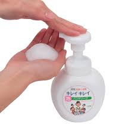
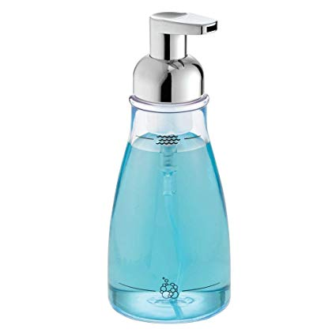
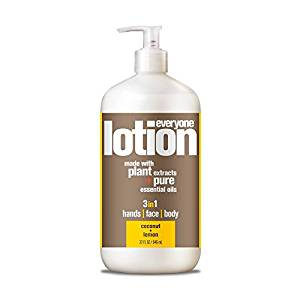
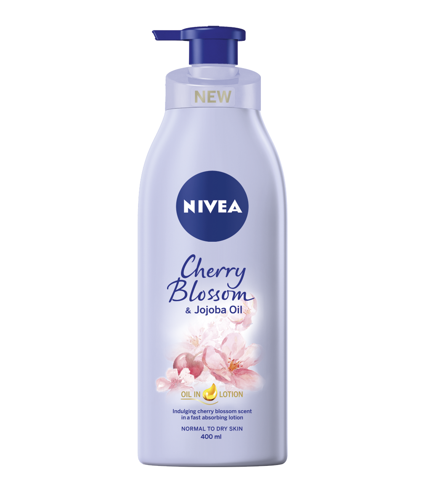
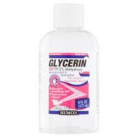
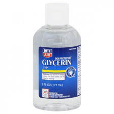
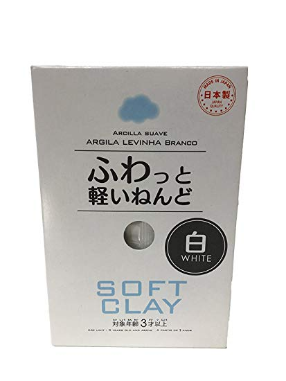
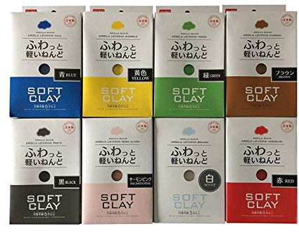
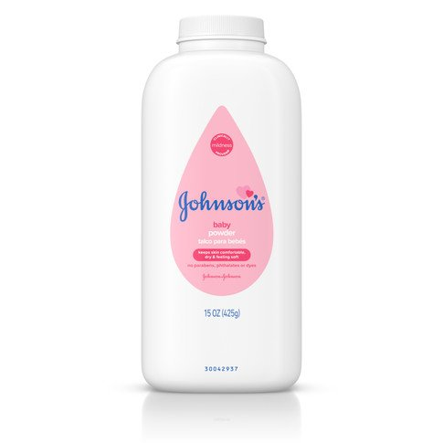
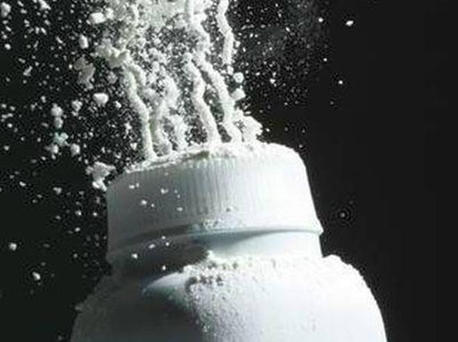

Slime Ingredents
As you may know, there are many optional ingredients and main ingredients to make a right choice of your slime.
So lets learn every purpose of each slime ingredients.
•Foam Soap


Foam soap is optional so it does not need when making a slime. It can make your slime bubbly. Most people apply foam soap for jiggly and fluffy slime.
•Lotion


Lotion is optional so it does not need when making a slime and it can make your slime elastic.
•Glycerin


Glycerin is optional so it does not need when making a slime. It can make your slime more glossy, stretchy, and smooth.So it can enhance its texture.
•Daiso Clay


This kind of clay, Daiso clay can be usedin making butter slime and it is an important ingredient in making slime. So it can make your slime stretchy,
soft, and fluffy.
•Baby Powder


Baby powder is optional so it does not need when making a slime. This ingredient can have a matte finishes on your slime.